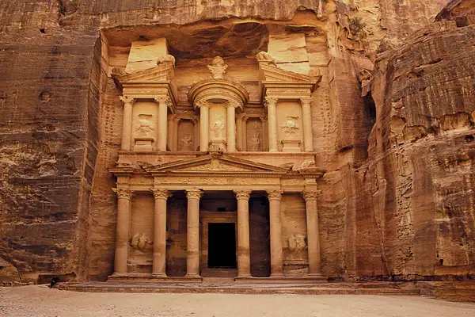

Petra
The ancient city of Petra, Jordan, is located in a remote valley, nestled among sandstone mountains and cliffs.
It was purported to be one of the places where Moses struck a rock and water gushed forth. Later the Nabateans, an Arab tribe, made it their capital, and during this time it flourished, becoming an important trade center, especially for spices. Noted carvers, the Nabateans chiseled dwellings, temples and tombs into the sandstone, which changed colour in the shifting sun.
